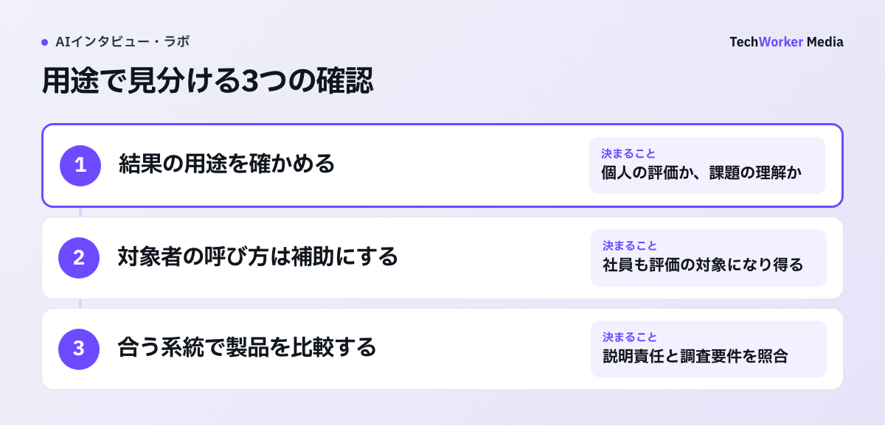
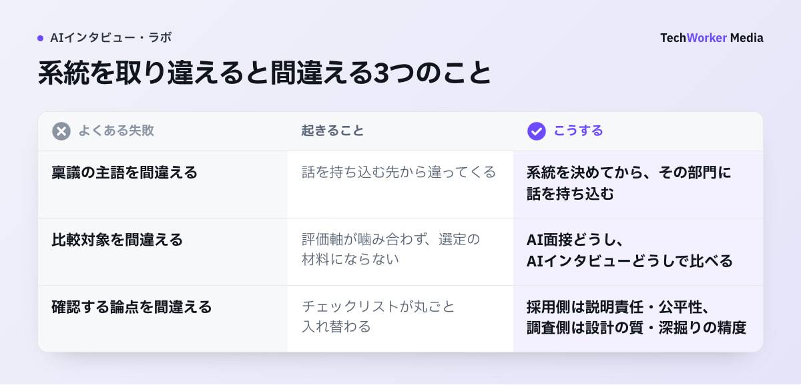

「AI面接」と「AIインタビュー」はどう違うのですか？
AI面接は候補者を評価する採用の仕組みで、AIインタビューは「なぜ」を聞く調査の手法です。
「AIインタビュー」で検索すると、採用選考ツールの比較記事と市場調査の解説記事が同じ画面に並びます。
どちらも「AIが人に質問し、答えに応じて聞き返す」体験は同じ形です。そのため、読み進めてから探していたものと違うと気づく方が少なくありません。
この記事では、2つの言葉が指すものを次のとおり分けます。
- AI面接は、採用選考でAIが応募者・候補者に質問し、回答をもとに評価を支援する仕組みです。導入するのは人事・採用部門で、結果は合否や次の選考ステップの判断に使われます。
- AIインタビューは、市場調査・組織調査でAIが聞き手役（モデレーター）になる定性調査の手法です。顧客・ユーザー・社員に質問し、答えに応じて深掘りします。導入するのはマーケティング・商品企画・リサーチ・CXで、組織調査であれば人事・経営企画です。結果は個人の評価に使わず、事業や組織の意思決定の材料にします。
混線が起きるのは、実査の見た目がほぼ同じだからです。対象者はURLやアプリを開き、AIの質問に答え、AIが内容に応じて追加の質問をします。
違いが出るのは、その回答が何に使われるかです。片方は一人を測るために使い、もう片方は多くの声を横断して理解するために使います。この一点が、ツールの設計・導入部門・確認すべき論点のすべてを分けます。
迷ったら一問だけ自分に聞いてください。「この結果で、誰かの合否や評価が決まるか？」決まるならAI面接、決まらず意思決定の材料になるならAIインタビューです。
AI面接（採用選考）は、どこまで広がっていますか？
新卒・中途・アルバイト採用の初期選考が中心で、累計導入1,000社超の公表事例もあります。
採用選考側の現在地を、各社が公式に公表している内容で確認します。
- 株式会社タレントアンドアセスメントの公式プレスリリース（2026年3月17日付）では、「SHaiN」は累計導入企業が1,000社を超えました。対話型のAI面接サービスです。受検者はスマートフォン等で24時間365日、場所を選ばずAIと対話しながら面接を受けられるとしています。
- 株式会社ZENKIGENは2025年7月29日、「harutaka AI面接」の提供開始を公表しました。採用DXサービス「harutaka」の対話型AI選考システムです。応募者の回答に応じて質問を動的に生成する仕組みだとしています。
いずれも2026年7月時点で、各社公式サイトと公式プレスリリースから確認できる公表情報の紹介です。本メディアは市場調査側の専門メディアのため、採用選考ツールの優劣は評価しません。
利用シーンは、応募者数が多い初期選考、24時間対応、面接機会の地理的な制約の解消などが語られています。
採用側に固有の論点は、評価用途の重さです。結果が個人の合否に関わるため、評価理由の説明責任と人による最終判断が、ツール選定と運用設計の中心になります。
国内では、昇格審査に対話型AI面接を組み込む公表事例も出ています。評価用途と傾聴用途の線引きは、社内AIインタビューの活用事例10選で公開事例をもとに整理しています。
AIインタビュー（市場調査・組織調査）は、何に使うのですか？
新商品の検証、解約理由、VoC、従業員の本音など、「なぜ」を人の言葉で集める場面に使います。
AIインタビューは、アンケートで掘れない「なぜ」を、従来のインタビューでは難しかった人数から集める手法です。VoC（顧客の声）の調査にも使います。
回答者は配布されたURLを都合のよい時間に開き、声またはテキストで答えます。AIは「それはどんな場面でしたか」「なぜそう感じたのですか」と聞き返します。集まった発言は横断的に分析し、意思決定の材料にします。
仕組みの全体像は、柱記事のAIインタビューとはで解説しています。
調査側にも限界があります。AIインタビューは定性調査です。「市場の何%がそう思うか」といった代表性が必要な定量推定や、厳密な統計検定はアンケートの領分です。
何人に聞けば十分かという人数設計は、インタビューは何人に聞けば十分かで扱っています。
具体例として、CoeSignal（株式会社TechWorkerが提供するAIインタビュープラットフォーム）は、この調査側のサービスです。
公式サイトの公開値は、深く聞ける人数が従来の5〜10名から30〜100名へ広がる水準です。調査期間は2〜3か月から1週間へ縮まります。自社の管理画面から調査を組み立てる形と、設計から報告書までを任せるManaged Researchの2形態があります。料金や個別の調査条件は、お問い合わせください。
自分が探している系統は、どう確かめればよいですか？
相手の呼び方と結果の使い途の2点を確かめると、30秒で採用側か調査側かが決まります。

- 相手を何と呼んでいるかを見ます。「応募者・候補者」と呼ぶなら採用側です。「顧客・ユーザー・社員」と呼ぶなら調査側です。
- 結果の使い途を見ます。個人の合否や評価に使うなら、AI面接です。知りたいのが「人々がなぜそう行動するのか」で、商品・施策・組織の意思決定に使うなら、AIインタビューです。
- 系統が決まったら、同じ系統の中で調べます。採用側なら、各社の公式サイトで一次情報を確認します。調査側なら、AIインタビューの仕組みと限界を押さえてから、比較に進みます。
人事が主導していても、切り分けは単純です。候補者を選考するなら採用側、社員の声を合否なしで聞くなら調査側です。従業員の本音の把握や内定辞退理由のヒアリングは、系統としてはAIインタビューに属します。
混同すると、何を間違えるのですか？
稟議の主語、比較すべき選択肢、確認すべき論点の3つを取り違え、検討が進まなくなります。

名前が似ているだけなら実害はない、とはなりません。系統を取り違えたまま検討を進めると、次の3つを連鎖的に間違えます。
- 稟議の主語を間違えます。採用ツールは人事・採用部門の予算と意思決定です。調査は事業部門・マーケティング・リサーチの予算と意思決定です。社内で話を持ち込む先から違ってきます。
- 比較対象を間違えます。ツール比較は、AI面接どうし、AIインタビューどうしで行います。系統をまたいだ比較表は評価軸が噛み合わず、選定の材料になりません。
- 確認すべき論点を間違えます。採用側で確認するのは、評価の説明責任・公平性・候補者体験です。調査側で確認するのは、調査設計の質・深掘りの精度・定性調査としての限界の明示です。チェックリストが丸ごと入れ替わります。
典型的な迷子は、「AIインタビュー ツール」で検索して採用選考ツールの比較記事に着地するパターンです。市場調査の検討が進まないまま時間が過ぎます。逆に、採用担当者が調査側の解説を読み込んでも、知りたい選考実務には届きません。
検索の入口で系統を確定させることが、検討の最短経路です。
AI面接とAIインタビューを、表で比べるとどうなりますか？
目的・対象者・評価するもの・導入部門・成果物・留意点が異なり、同じなのは実査の形だけです。
両者を同じ観点で並べると、重なる項目がほぼありません。
| 観点 | AI面接（採用選考） | AIインタビュー（市場調査・組織調査） |
|---|---|---|
| 目的 | 候補者の選考・評価の支援 | 顧客・ユーザー・社員の「なぜ」の理解 |
| 対象者 | 応募者・候補者（昇格審査では社員） | 顧客・ユーザー・見込み客・社員 |
| 評価・分析するもの | 個人の資質・適性・回答内容（一人ずつの評価） | 発言の内容・理由・文脈（横断でのパターン分析。個人の合否は付けない） |
| 導入部門 | 人事・採用部門 | マーケティング・商品企画・リサーチ・CX・経営企画・人事（組織調査） |
| 成果物 | 候補者ごとの評価レポート | 横断的な示唆をまとめた調査レポート・判断メモ |
| 代表的な留意点 | 評価の説明責任・公平性・候補者体験への配慮 | 定性調査のため、代表性が必要な定量推定には向かない |
表：AI面接とAIインタビューの比較（本記事の整理）。用語の使われ方は2026年7月時点の各社公式サイト・公開情報での一般的な用法で、業界で統一された定義はありません。
よくある質問
業界で統一された定義はありません。ただし実務上は、次の使い分けが定着しつつあります。採用選考で候補者を評価する仕組みを「AI面接」と呼びます。市場調査・組織調査でAIが深掘りする定性調査を「AIインタビュー」と呼びます。迷ったら、相手を「候補者」と呼ぶか「顧客・社員」と呼ぶか、結果で合否が決まるかどうかで判断するのが確実です。
設計思想が異なるため、基本的には向きません。AI面接ツールは評価基準に沿って候補者一人ひとりを測るための仕組みです。市場調査に必要な「答えに応じた深掘り」「複数人の発言の横断分析」「率直に話せる匿名性の設計」は、別の要件です。逆に、定性調査向けのAIインタビューは、個人の合否評価を目的とした設計になっていません。目的に合った系統の中から選ぶことが先決です。
あります。ただし用途は選考でなく、「声を聞く」ことです。内定辞退の理由、入社後のつまずき、従業員の本音の把握などは、合否を付けない定性調査の領分です。AIインタビューが機能します。一方、候補者の合否評価に関わる用途は、AI面接ツールと人による最終判断の領域です。
CoeSignalは市場調査・組織調査のためのAIインタビュープラットフォームです。候補者の合否評価を目的とした採用選考ツールではありません。対象は顧客・ユーザー・社員の声を聞き、意思決定の材料に変える用途です。従業員調査や辞退理由の把握など、個別のテーマで使えるかどうかは無料相談でご確認ください。
次の一歩は何から始めればよいですか？
30秒の切り分けで系統を決め、同じ系統の情報だけを読み進めることから始めてください。
- 相手の呼び方と結果の使い途から、採用側か調査側かを決めます。
- 調査側なら、テーマを1つに絞って小さく1本回します。
- 成果物が意思決定に使えるかを確かめてから、対象を広げます。